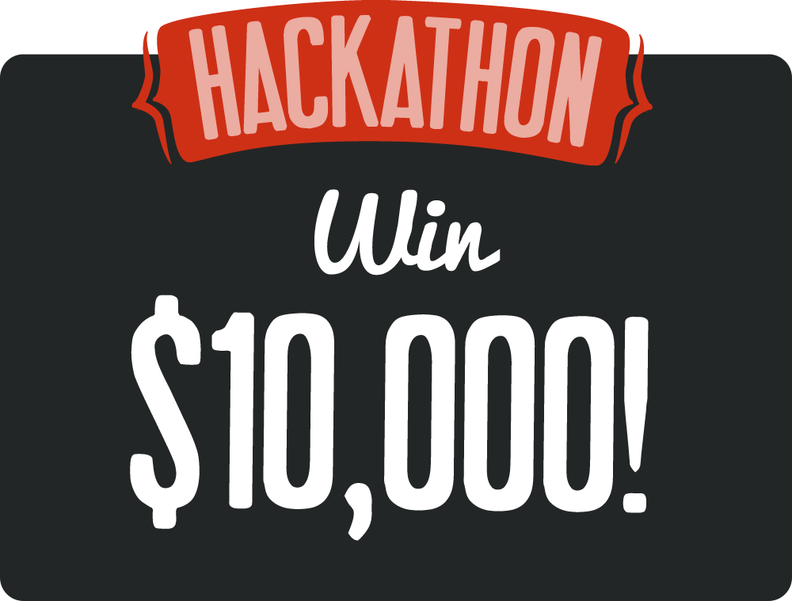

Calling all Titanium rockstars! Show off your mobile development skills at the CODESTRONG Hackathon.
The contest begins September 6th and concludes Tuesday, September 20th, when applicants submit their entries to CODESTRONG Hackathon judges.
Prizes include:
- First Prize: $10,000
- Second Prize: $2,500
- Third Prize: $1,000
- Top Five Apps will receive Barnes & Noble NOOK Tablets
Judging Criteria:
- Depth of integration with Titanium APIs: Does the application take advantage of the unique functionality such as native user interface elements, social networking or geo-location features offered by the Titanium platform? Does it leverage Titanium advanced APIs like push notifications, in-app purchasing or barcode scanning?
- Utility: Is the application useful to a consumer or business person?
- User Experience: Is the application easy to use? Is it graphically appealing?
- Level of Innovation: Is the application unique and innovative? Does it bring new functionality to mobile devices?
Resources:
- 30-day free trial of Appcelerator’s Indie package (available at http://www.appcelerator.com/hackathon-account)
- Office hours with Appcelerator Developers during the CODESTRONG conference
Rules:
- Hackathon participants must be registered for Appcelerator's CODESTRONG conference.
- Applications cannot be under development prior to the contest kickoff of September 6th.
- The development tools, frameworks and application focus are entirely up to the participants but they must be built using the Appcelerator Titanium platform.
- Participants are expected to bring all tools and software necessary to build their entry. Organizers will provide caffeine and power strips, but you might want to bring your own.
- Rules are subject to change at the discretion of Appcelerator.
- Employees, contractors, and partners of Appcelerator are welcome to participate in the Hackathon, but are not eligible to receive prizes.
- Contest is open to developers worldwide for mobile apps built on Appcelerator Titanium for iOS and Android platforms.
- Submissions are due by 5:00 PM PST on September 20, 2011.
- To participate in the competition, applicants must resister at CODESTRONG 2011 on September 19th at the InterContinental Hotel, 888 Howard Street, San Francisco, California 94103, then submit their entry at CODESTRONG on September 20th at 5:00 PM Pacific Time.
- Only applications and services that did not have publicly available integration with Titanium prior to September 6, 2011 are eligible for the competition.
- All submissions must be localized in English in order to be eligible to win a prize. Other languages are fine, but your submission and must work in English.
- Applicants will present their apps to the judging panel at 5:00pm on September 20th.
- Prizes will be awarded at 6:00pm on September 20th.
- The first place winner will receive $10,000 in cash and a Barnes & Noble Color Nook.
- The second place winner will receive $2,500 in cash and a Barnes & Noble Color Nook.
- The third place winner will receive $1,000 in cash and a Barnes & Noble Color Nook.
- The top five winners will receive a Barnes & Noble Color Nook.